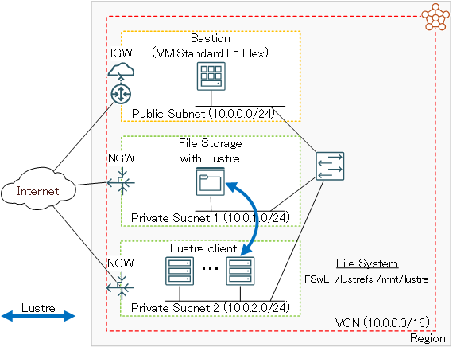

0. 概要
マネージドLustreサービスの File Storage with Lustre は、以下の特徴から高性能・高可用性・低い運用コストが求められるHPC/GPUクラスタ向けのファイル共有ストレージに最適なサービスです。
- 並列ファイルシステムであるLustreファイルシステムの特性を生かした高スループット
- ファイルサーバがHA構成となっていて高いサービス可用性を提供
- ストレージ内のデータが複製されていて高いデータ可用性を提供
- パフォーマンス層 のアップグレードや 容量 の増加による動的な性能向上が可能（※1）
- ファイルサーバのソフトウェアメンテナンスが不要
- OCIコンソールからGUIでデプロイできるため構築難易度が低い
※1）パフォーマンス層 に関連する OCI 公式ドキュメントは、 ここ を参照してください。
これに対しマネージドNFSサービスの ファイル・ストレージ は、 File Storage with Lustre と同等の可用性・運用性を持つファイル共有ストレージをより低い価格帯から構築することが出来ますが、 File Storage with Lustre を採用することで、HPCワークロードのスクラッチ領域や機械学習ワークロードのチェックポイント領域等の高いスループットが要求されるファイル共有ストレージを構築することが可能です。
ファイル・ストレージ と File Storage with Lustre の比較詳細は、 OCI HPCテクニカルTips集 の HPC/GPUクラスタ向けファイル共有ストレージの最適な構築手法 を参照してください。
以上を踏まえて本チュートリアルは、 File Storage with Lustre でファイル共有ストレージを構築、HPCワークロードを実行するHPCクラスタからのアクセスを想定して クラスタ・ネットワーク に接続する計算ノードをLustreクライアントとして構築する手順と、機械学習ワークロードを実行する機械学習環境からのアクセスを想定してコンテナからファイル共有ストレージ領域にアクセスするGPUノードをLustreクライアントとして構築する手順を解説します。
本チュートリアルで構築するファイル共有ストレージ環境の構成を以下に示します。
[ File Storage with Lustre ]
- パフォーマンス層 ： 125 MB/s/TB
- 容量： 31.2TB
- 総スループット： 3.9 GB/s
[計算ノード]
- シェイプ ： BM.Optimized3.36
- イメージ ： Oracle Linux 8.10ベースのHPC クラスタネットワーキングイメージ （※2）
※2）OCI HPCテクニカルTips集 の クラスタネットワーキングイメージの選び方 の 1. クラスタネットワーキングイメージ一覧 のイメージ No.12 です。
[GPUノード]
- シェイプ： BM.GPU4.8
- イメージ： プラットフォーム・イメージ Oracle-Linux-8.10-2025.02.28-0
- NVIDIA GPUドライバ： 570.133.20
- NVIDIA Container Toolkit ： 1.17.5
- コンテナランタイム： containerd 2.0.3
- コンテナ： TensorFlow NGC Container 24.06-tf2-py3

所要時間 : 約3時間
前提条件 : ファイル共有ストレージ環境を収容する コンパートメント (ルート・コンパートメントでもOKです)の作成と、この コンパートメント に対する必要なリソース管理権限がユーザーに付与されていること。
注意 : 本コンテンツ内の画面ショットは、現在のOCIコンソール画面と異なっている場合があります。
1. 事前作業
1-0. 概要
本章は、 File Storage with Lustre のファイル共有ストレージ環境を構築するために事前に作成する必要のある、以下のリソースを作成します。
- 仮想クラウド・ネットワーク
File Storage with Lustre 内のサーバー群やストレージ等のサービスに関連するリソースの接続と、LustreクライアントをTCP接続するために使用します。 - Bastionノード
インターネットから直接アクセス出来ないプライベートサブネットに接続するLustreクライアントにログインする際の踏み台として利用します。 - IAMポリシー
File Storage with Lustre が内部的に使用する 仮想クラウド・ネットワーク 関連リソースの作成に必要です。
1-1. 仮想クラウド・ネットワーク作成
仮想クラウド・ネットワーク の作成は、 OCIチュートリアル の その2 - クラウドに仮想ネットワーク(VCN)を作る の手順に従い、以下のリソースを作成します。
- 仮想クラウド・ネットワーク
- VCN IPv4 CIDRブロック ： 10.0.0.0/16
- パブリックサブネット
- IPv4 CIDRブロック ： 10.0.0.0/24
- File Storage with Lustre 関連リソース接続用プライベートサブネット（※3）
- IPv4 CIDRブロック ： 10.0.1.0/24
- Lustreクライアント接続用プライベートサブネット
- IPv4 CIDRブロック ： 10.0.2.0/24
- インターネット・ゲートウェイ （パブリックサブネットにアタッチ）
- NATゲートウェイ （プライベートサブネットにアタッチ）
- サービス・ゲートウェイ （プライベートサブネットにアタッチ）
- ルート表 x 2（パブリックサブネットとプライベートサブネットにアタッチ）
- セキュリティリスト x 2（パブリックサブネットとプライベートサブネットにアタッチ）
※3）このサブネットのCIDRレンジは、 ここ のドキュメントを参考に、将来的な拡張性を考慮して決定します。
作成後、 セキュリティリスト が以下となるように修正します。
| サブネット | 通信方向 | ステートレス | ソース | IPプロトコル | ソース・ポート 範囲 |
宛先ポート 範囲 |
|---|---|---|---|---|---|---|
| パブリック | イングレス | いいえ | 0.0.0.0/0 （※4） |
TCP | All | 22 |
| いいえ | 10.0.0.0/16 | 全プロトコル | - | - | ||
| イグレス | いいえ | 0.0.0.0/0 | 全プロトコル | - | - | |
| プライベート | イングレス | いいえ | 10.0.0.0/16 （※5） |
全プロトコル （※5） |
- | - |
| イグレス | いいえ | 0.0.0.0/0 | 全プロトコル | - | - |
※4）この設定により、BastionノードへのSSHアクセスをインターネット上の全てのIPアドレスに許可しますが、これを自身のサイトのアクセス元IPアドレスに限定することで、セキュリティーレベルを向上させることが可能です。
※5）この設定により、作成した 仮想クラウド・ネットワーク に割り当てられる全てのIPアドレスからの全てのポートへのアクセスを許可しますが、 File Storage with Lustre を使用する際の最低限必要な セキュリティリスト とするための関連する OCI 公式ドキュメントは、 ここ を参照してください。
1-2. Bastionノード作成
Bastionノードの作成は、 OCIチュートリアル の その3 - インスタンスを作成する の手順を参考に、ご自身の要件に沿ったインスタンスを作成します。
本チュートリアルは、以下属性のインスタンスをBastionノードとして作成します。
- シェイプ ： VM.Standard.E5.Flex
- イメージ ： プラットフォーム・イメージ Oracle-Linux-8.10-2025.02.28-0
- サブネット ： 先に作成したパブリックサブネット
- SSHキーの追加 ： Bastionノードにログインする際使用するSSH秘密鍵に対応する公開鍵
次に、作成したBastionノードにopcユーザでSSHログインして以下コマンドを実行してSSH鍵ペアを作成し、その公開鍵を控えます。
このSSH鍵は、BastionノードからLustreクライアントにログインする際に使用します。
$ ssh-keygen -t rsa -N "" -f ~/.ssh/id_rsa
Generating public/private rsa key pair.
Your identification has been saved in /home/opc/.ssh/id_rsa.
Your public key has been saved in /home/opc/.ssh/id_rsa.pub.
The key fingerprint is:
SHA256:gROjFmmm2yf3Frsg2P2T7cBzSCCEiml9BRGDnhi5qBs opc@bastion
The keys randomart image is:
+---[RSA 3072]----+
| ..+** |
| o.o+o.= |
|oo*+= = . |
|=+.= o o . |
|o o. S |
|E .oo.oo.. |
| o. o+o.==. |
|. . o*+. |
| .o+. |
+----[SHA256]-----+
$ cat .ssh/id_rsa.pub
ssh-rsa AAAAB3NzaC1yc2EAAAADAQABAAABgQDTkw2diccQ4mnxea/qUcClehcYfZIQhB94d2aiWUrLpD1kDQQzsc6Q8ndyOu6h7X3E0FGY2SDjDyhJRdntbOZKPkYkQrGHbhnBllFPMV4NlObkf/YX6a9bc4vrGgnayRgfj0vOZ0RKlJmkfjAR/7Cw48LzQnaDDq2HHZAo+c71WBSjLt1SsX7tXHqkzjGUv44qqEiC6qlEiZd9yevA7kR0IoN9dIWXaKnMbOVGr8DezyLsruoQxhj6bHNwXhEjlGPg8E6R35AdjGeGZOCYT2clfMu9iavuzR5dilysARq1Lxow2/MEija3/twxmzhxVbwoGTXE0sCz3SGMnHTwLGEE7Tok+i7zZMB2ySbCM42Icz3Ja2qxNxqdx9YUKZ48SgkNPrMMouZGm+lZrZf0dypQqDbUrA0uZkkTUR+RTY+V/0MmuH6eDgHQLjxzo07/+gw2BG9CMcor0fMYhEJiKUVRy2LXBIK2Zj2+Ow7zs552f7SRGWnAktU7sTU801frAjE= opc@bastion
$
1-3. IAMポリシー作成
OCIコンソールにログインし、 アイデンティティとセキュリティ → ポリシー とメニューを辿ります。
次に、表示される以下 xxxxコンパートメント内のポリシー 画面で、 ポリシーの作成 ボタンをクリックします。
この際、 コンパートメント プルダウンメニューでルートコンパートメントを指定します。
次に、表示される以下 ポリシーの作成 画面で、各フィールドに以下の情報を入力し 作成 ボタンをクリックします。
なお、ここに記載のないフィールドは、デフォルトのままとします。
- 名前 ： IAMポリシー に付与する名前
- 説明 ： IAMポリシー に付与する説明（用途等）
- ポリシー・ビルダー ： 作成する IAMポリシー を指定する以下構文（ 手動エディタの表示 ボタンをクリックして表示）
allow service lustrefs to use virtual-network-family in tenancy
2. File Storage with Lustre作成
本章は、OCIコンソールから File Storage with Lustre を作成します。
OCIコンソールにログインし、 File Storage with Lustre を作成するリージョンを選択後、 ストレージ → Lustreファイル・システム とメニューを辿り、表示される以下画面で 作成 ボタンをクリックします。
次に、表示される Lustreファイル・システムの作成 画面で以下の情報を入力し、 作成 ボタンをクリックします。
なおここに記載のないフィールドは、デフォルトのままとします。
-
一般情報 フィールド
- ファイル・システム名 ： Lustreファイル・システム に付与する名前
-
配置 フィールド
- 可用性ドメイン ： Lustreファイル・システム を作成する 可用性ドメイン
-
パフォーマンスと容量 フィールド
- パフォーマンス層（MB/s/TB） ： 125
- 容量（TB） ： 31.2
- 確認 ： チェック
-
ネットワーキング フィールド
- 仮想クラウド・ネットワーク ： 先に作成した 仮想クラウド・ネットワーク
- サブネット ： 先に作成した File Storage with Lustre 関連リソース接続用プライベートサブネット
次に、表示される以下 Lustreファイル・システム詳細 画面で、ステータスが CREATING と表示されれば、 File Storage with Lustre の作成が実施されています。
ステータスが ACTIVE となれば、 File Storage with Lustre の作成が完了しています。
作成が完了するまでの所要時間は、本チュートリアル構成の場合で10分程度です。
次に、ステータスが ACTIVE となった以下 Lustreファイル・システム詳細 画面で、 Lustreプロパティ フィールドの マウント・コマンド の コピー ボタンをクリックし、Lustreクライアントからマウントする際のコマンドをクリップボードに保存します。
3. Lustreクライアント構築
3-0. 概要
本章は、Lustreクライアントの構築方法を以下2通りのケースに分けて解説します。
- クラスタ・ネットワーク に接続する計算ノード
- コンテナを実行するGPUノード
3-1. クラスタ・ネットワークに接続する計算ノード
3-1-0. 概要
本章は、 クラスタ・ネットワーク に接続する計算ノードにLustreクライアントを構築する方法を、以下の順に解説します。
- インスタンス作成
- Lustreクライアント用RPMパッケージビルド
- Lustreクライアント用RPMパッケージインストール
- ファイル共有ストレージ領域マウント
3-1-1. インスタンス作成
Lustreクライアントとする計算ノードのインスタンスは、 OCI HPCチュートリアル集 の HPCクラスタを構築する(基礎インフラ手動構築編) の 2. HPCクラスタ作成 と 3. 計算ノード確認 の手順に従い、以下属性のインスタンスを作成します。
- シェイプ ： BM.Optimized3.36
- イメージ ： Oracle Linux 8.10ベースのHPC クラスタネットワーキングイメージ （※6）
- サブネット ： 先に作成したLustreクライアント接続用プライベートサブネット
- SSHキーの追加 ：先にBastionノードで作成したSSH鍵ペアの公開鍵
※6）OCI HPCテクニカルTips集 の クラスタネットワーキングイメージの選び方 の 1. クラスタネットワーキングイメージ一覧 のイメージ No.12 です。サポートされるLustreクライアントのイメージに関連する OCI 公式ドキュメントは、 ここ を参照してください。
3-1-2. Lustreクライアント用RPMパッケージビルド
以下コマンドを計算ノードのopcユーザで実行し、Lustreクライアント用RPMパッケージをビルドします。
なおmakeコマンドの並列数は、当該ノードのコア数に合わせて調整します。
$ sudo yum-config-manager --enable ol8_codeready_builder ol8_developer ol8_developer_EPEL
$ sudo dnf install -y git libtool patch pkgconfig libnl3-devel libblkid-devel libuuid-devel rpm-build kernel-rpm-macros kernel-devel kernel-abi-whitelists libmount libmount-devel libyaml-devel
$ mkdir ~/`hostname` && cd ~/`hostname` && git clone git://git.whamcloud.com/fs/lustre-release.git lustre-client
$ cd lustre-client && git checkout tags/2.15.5
$ sh ./autogen.sh && ./configure --enable-client
$ make -j 36
$ make -j 36 rpms
$ make -j 36 dkms-rpm
ここで作成するRPMパッケージは、使用するイメージが同じであれば他のLustreクライアントでも再利用できるため、2台目以降の同じイメージを使用するLustreクライアント構築時は、本ステップを省略します。
先のLustreクライアント用RPMパッケージのビルドが成功すると、カレントディレクトリに以降で利用する以下のRPMパッケージが作成されます。
$ ls -1 lustre-client-2.15.5-1.el8.x86_64.rpm lustre-client-dkms-2.15.5-1.el8.noarch.rpm
lustre-client-2.15.5-1.el8.x86_64.rpm
lustre-client-dkms-2.15.5-1.el8.noarch.rpm
$
3-1-3. Lustreクライアント用RPMパッケージインストール
先に作成した2個のLustreクライアント用RPMパッケージをカレントディレクトリにコピー後、以下コマンドを計算ノードのopcユーザで実行し、Lustreクライアント用RPMパッケージのインストールとLustreカーネルモジュールのロードを行い、ロードされていることを確認します。
$ sudo yum-config-manager --enable ol8_codeready_builder
$ sudo dnf install -y libnl3-devel libmount-devel libyaml-devel expect perl dkms
$ sudo rpm -ivh lustre-client-2.15.5-1.el8.x86_64.rpm lustre-client-dkms-2.15.5-1.el8.noarch.rpm
$ sudo modprobe lustre
$ lsmod | grep -i lustre
lustre 1052672 0
lmv 208896 1 lustre
mdc 286720 1 lustre
lov 348160 2 mdc,lustre
ptlrpc 1441792 7 fld,osc,fid,lov,mdc,lmv,lustre
obdclass 3371008 8 fld,osc,fid,ptlrpc,lov,mdc,lmv,lustre
lnet 720896 6 osc,obdclass,ptlrpc,ksocklnd,lmv,lustre
libcfs 266240 11 fld,lnet,osc,fid,obdclass,ptlrpc,ksocklnd,lov,mdc,lmv,lustre
$
なおこのカーネルモジュールは、OSを再起動した際には再度ロードする必要があります。
3-1-4. ファイル共有ストレージ領域マウント
以下コマンドを計算ノードのopcユーザで実行し、ファイル共有ストレージ領域をマウントして File Storage with Lustre にアクセスできることを確認します。
なおmountコマンドは、先にOCIコンソールからコピーしたものに置き換えます。
$ sudo mkdir /mnt/lustre
$ sudo mount -t lustre 10.0.1.xxx@tcp:/lustrefs /mnt/lustre
$ df -h /mnt/lustre
Filesystem Size Used Avail Use% Mounted on
10.0.1.xx@tcp:/lustrefs 30T 1.6G 28T 1% /mnt/lustre
$ date | sudo tee /mnt/lustre/date.txt
Mon Apr 21 17:20:52 JST 2025
$ ls -l /mnt/lustre/date.txt
-rw-r--r-- 1 root root 29 Apr 21 17:20 /mnt/lustre/date.txt
$
3-2. コンテナを実行するGPUノード
3-2-0. 概要
本章は、コンテナからファイル共有ストレージ領域にアクセスするGPUノードにLustreクライアントを構築する方法を、以下の順に解説します。
- インスタンス作成
- NVIDIA GPUドライバインストール
- Lustreクライアント用RPMパッケージビルド（ホストOS上）
- Lustreクライアント用RPMパッケージインストール（ホストOS上）
- ファイル共有ストレージ領域マウント（ホストOS上）
- コンテナ環境構築
- コンテナ起動
- Lustreクライアント用RPMパッケージビルド（コンテナ上）
- Lustreクライアント用RPMパッケージインストール（コンテナ上）
- ファイル共有ストレージ領域マウント（コンテナ上）
3-2-1. インスタンス作成
LustreクライアントとするGPUノードのインスタンスは、 OCI HPCチュートリアル集 の GPUインスタンスで分散機械学習環境を構築する の 2. GPUノード作成 と 3. GPUノード確認 の手順に従い、以下属性のインスタンスを作成します。
- シェイプ ： BM.GPU4.8
- イメージ ： プラットフォーム・イメージ Oracle-Linux-8.10-2025.02.28-0（※7）
- サブネット ： 先に作成したLustreクライアント接続用プライベートサブネット
※7） プラットフォーム・イメージ Oracle-Linux-8.10-Gen2-GPU-2025.02.28-0 は、インストールされているNVIDIA GPUドライバが RedHat Compatible Kernel （以降 RHCK と呼称します。）用ではないため、このイメージで作成後に RHCK 用のNVIDIA GPUドライバをインストールします。サポートされるLustreクライアントのイメージに関連する OCI 公式ドキュメントは、 ここ を参照してください。
次に、 ここ のブログの手順に従い、GPUノードのカーネルを RHCK に変更します。
3-2-2. NVIDIA GPUドライバインストール
以下コマンドをGPUノードのopcユーザで実行し、NVIDIA GPUドライバをインストールしてOSを再起動することでこれを有効化します。
$ sudo dnf -y install kernel-devel-$(uname -r) kernel-headers
$ sudo dnf config-manager --set-enabled ol8_codeready_builder
$ sudo dnf config-manager --add-repo https://developer.download.nvidia.com/compute/cuda/repos/rhel8/x86_64/cuda-rhel8.repo
$ sudo dnf clean expire-cache
$ sudo dnf module install -y nvidia-driver:570
$ sudo shutdown -r now
OS起動後以下コマンドをGPUノードのopcユーザで実行し、NVIDIA GPUドライバが正常にインストールされたことを確認します。
$ lsmod | grep nvidia
nvidia_uvm 1654784 0
nvidia_drm 102400 0
nvidia_modeset 1482752 1 nvidia_drm
nvidia 89247744 2 nvidia_uvm,nvidia_modeset
video 57344 1 nvidia_modeset
drm_kms_helper 184320 6 bochs,drm_vram_helper,nvidia_drm
drm 602112 8 drm_kms_helper,bochs,drm_vram_helper,nvidia,drm_ttm_helper,nvidia_drm,ttm
$ nvidia-smi
Wed Apr 23 16:08:41 2025
+-----------------------------------------------------------------------------------------+
| NVIDIA-SMI 570.86.15 Driver Version: 570.86.15 CUDA Version: 12.8 |
|-----------------------------------------+------------------------+----------------------+
| GPU Name Persistence-M | Bus-Id Disp.A | Volatile Uncorr. ECC |
| Fan Temp Perf Pwr:Usage/Cap | Memory-Usage | GPU-Util Compute M. |
| | | MIG M. |
|=========================================+========================+======================|
| 0 NVIDIA A100-SXM4-40GB Off | 00000000:0F:00.0 Off | 0 |
| N/A 31C P0 56W / 400W | 1MiB / 40960MiB | 0% Default |
| | | Disabled |
+-----------------------------------------+------------------------+----------------------+
| 1 NVIDIA A100-SXM4-40GB Off | 00000000:15:00.0 Off | 0 |
| N/A 30C P0 55W / 400W | 1MiB / 40960MiB | 0% Default |
| | | Disabled |
+-----------------------------------------+------------------------+----------------------+
| 2 NVIDIA A100-SXM4-40GB Off | 00000000:51:00.0 Off | 0 |
| N/A 31C P0 56W / 400W | 1MiB / 40960MiB | 0% Default |
| | | Disabled |
+-----------------------------------------+------------------------+----------------------+
| 3 NVIDIA A100-SXM4-40GB Off | 00000000:54:00.0 Off | 0 |
| N/A 30C P0 52W / 400W | 1MiB / 40960MiB | 0% Default |
| | | Disabled |
+-----------------------------------------+------------------------+----------------------+
| 4 NVIDIA A100-SXM4-40GB Off | 00000000:8D:00.0 Off | 0 |
| N/A 30C P0 53W / 400W | 1MiB / 40960MiB | 0% Default |
| | | Disabled |
+-----------------------------------------+------------------------+----------------------+
| 5 NVIDIA A100-SXM4-40GB Off | 00000000:92:00.0 Off | 0 |
| N/A 30C P0 52W / 400W | 1MiB / 40960MiB | 0% Default |
| | | Disabled |
+-----------------------------------------+------------------------+----------------------+
| 6 NVIDIA A100-SXM4-40GB Off | 00000000:D6:00.0 Off | 0 |
| N/A 32C P0 56W / 400W | 1MiB / 40960MiB | 0% Default |
| | | Disabled |
+-----------------------------------------+------------------------+----------------------+
| 7 NVIDIA A100-SXM4-40GB Off | 00000000:DA:00.0 Off | 0 |
| N/A 32C P0 54W / 400W | 1MiB / 40960MiB | 0% Default |
| | | Disabled |
+-----------------------------------------+------------------------+----------------------+
+-----------------------------------------------------------------------------------------+
| Processes: |
| GPU GI CI PID Type Process name GPU Memory |
| ID ID Usage |
|=========================================================================================|
| No running processes found |
+-----------------------------------------------------------------------------------------+
$
3-2-3. Lustreクライアント用RPMパッケージビルド（ホストOS上）
以下コマンドをGPUノードのopcユーザで実行し、Lustreクライアント用RPMパッケージをビルドします。
なおmakeコマンドの並列数は、当該ノードのコア数に合わせて調整します。
$ sudo yum-config-manager --enable ol8_codeready_builder ol8_developer ol8_developer_EPEL
$ sudo dnf install -y git libtool patch pkgconfig libnl3-devel libblkid-devel libuuid-devel rpm-build kernel-rpm-macros kernel-devel kernel-abi-whitelists libmount libmount-devel libyaml-devel
$ mkdir ~/`hostname` && cd ~/`hostname` && git clone git://git.whamcloud.com/fs/lustre-release.git lustre-client
$ cd lustre-client && git checkout tags/2.15.5
$ sh ./autogen.sh && ./configure --enable-client
$ make -j 128
$ make -j 128 rpms
$ make -j 128 dkms-rpm
ここで作成するRPMパッケージは、使用するイメージが同じであれば他のLustreクライアントでも再利用できるため、2台目以降の同じイメージを使用するGPUノード構築時は、本ステップを省略します。
先のLustreクライアント用RPMパッケージのビルドが成功すると、カレントディレクトリに以降で利用する以下のRPMパッケージが作成されます。
$ ls -1 lustre-client-2.15.5-1.el8.x86_64.rpm lustre-client-dkms-2.15.5-1.el8.noarch.rpm
lustre-client-2.15.5-1.el8.x86_64.rpm
lustre-client-dkms-2.15.5-1.el8.noarch.rpm
$
3-2-4. Lustreクライアント用RPMパッケージインストール（ホストOS上）
先に作成した2個のLustreクライアント用RPMパッケージがカレントディレクトリに存在する状態で、以下コマンドをGPUノードのopcユーザで実行し、Lustreクライアント用RPMパッケージのインストールとLustreカーネルモジュールのロードを行い、ロードされていることを確認します。
$ sudo yum-config-manager --enable ol8_codeready_builder
$ sudo dnf install -y libnl3-devel libmount-devel libyaml-devel expect perl dkms
$ sudo rpm -ivh lustre-client-2.15.5-1.el8.x86_64.rpm lustre-client-dkms-2.15.5-1.el8.noarch.rpm
$ sudo modprobe lustre
$ lsmod | grep -i lustre
lustre 1052672 0
lmv 208896 1 lustre
mdc 286720 1 lustre
lov 348160 2 mdc,lustre
ptlrpc 1441792 7 fld,osc,fid,lov,mdc,lmv,lustre
obdclass 3371008 8 fld,osc,fid,ptlrpc,lov,mdc,lmv,lustre
lnet 720896 6 osc,obdclass,ptlrpc,ksocklnd,lmv,lustre
libcfs 266240 11 fld,lnet,osc,fid,obdclass,ptlrpc,ksocklnd,lov,mdc,lmv,lustre
$
なおこのカーネルモジュールは、OSを再起動した際には再度ロードする必要があります。
3-2-5. ファイル共有ストレージ領域マウント（ホストOS上）
以下コマンドをGPUノードのopcユーザで実行し、ファイル共有ストレージ領域をマウントして File Storage with Lustre にアクセスできることを確認後、アンマウントします。
なおmountコマンドは、先にOCIコンソールからコピーしたものに置き換えます。
$ sudo mkdir /mnt/lustre
$ sudo mount -t lustre 10.0.1.xxx@tcp:/lustrefs /mnt/lustre
$ df -h /mnt/lustre
Filesystem Size Used Avail Use% Mounted on
10.0.1.xx@tcp:/lustrefs 30T 1.6G 28T 1% /mnt/lustre
$ date | sudo tee /mnt/lustre/date.txt
Mon Apr 21 17:20:52 JST 2025
$ ls -l /mnt/lustre/date.txt
-rw-r--r-- 1 root root 29 Apr 21 17:20 /mnt/lustre/date.txt
$ sudo umount /mnt/lustre
3-2-6. コンテナ環境構築
コンテナ環境は、 OCI HPCチュートリアル集 の GPUインスタンスで分散機械学習環境を構築する の 4. コンテナ環境構築 の手順に従い構築します。
この際、ファイル共有領域にアクセスするコンテナはroot権限で実行する必要があるため、一般ユーザ権限で containerd 上にコンテナを実行するために必要な手順は実施する必要がありません。
3-2-7. コンテナ起動
以下コマンドをGPUノードのopcユーザで実行し、 NGC Catalog から提供される TensorFlow NGC Container を起動し、コンテナ上でGPUにアクセスできることを確認します。
$ sudo systemctl start containerd
$ sudo nerdctl run -it --privileged --rm --gpus all --ipc=host --ulimit memlock=-1 --ulimit stack=67108864 nvcr.io/nvidia/tensorflow:24.06-tf2-py3
nvcr.io/nvidia/tensorflow:24.06-tf2-py3: resolved |++++++++++++++++++++++++++++++++++++++|
:
================
== TensorFlow ==
================
:
https://developer.nvidia.com/ngc/nvidia-deep-learning-container-license
# nvidia-smi
Wed Apr 23 16:08:41 2025
+-----------------------------------------------------------------------------------------+
| NVIDIA-SMI 570.86.15 Driver Version: 570.86.15 CUDA Version: 12.8 |
|-----------------------------------------+------------------------+----------------------+
| GPU Name Persistence-M | Bus-Id Disp.A | Volatile Uncorr. ECC |
| Fan Temp Perf Pwr:Usage/Cap | Memory-Usage | GPU-Util Compute M. |
| | | MIG M. |
|=========================================+========================+======================|
| 0 NVIDIA A100-SXM4-40GB Off | 00000000:0F:00.0 Off | 0 |
| N/A 31C P0 56W / 400W | 1MiB / 40960MiB | 0% Default |
| | | Disabled |
+-----------------------------------------+------------------------+----------------------+
| 1 NVIDIA A100-SXM4-40GB Off | 00000000:15:00.0 Off | 0 |
| N/A 30C P0 55W / 400W | 1MiB / 40960MiB | 0% Default |
| | | Disabled |
+-----------------------------------------+------------------------+----------------------+
| 2 NVIDIA A100-SXM4-40GB Off | 00000000:51:00.0 Off | 0 |
| N/A 31C P0 56W / 400W | 1MiB / 40960MiB | 0% Default |
| | | Disabled |
+-----------------------------------------+------------------------+----------------------+
| 3 NVIDIA A100-SXM4-40GB Off | 00000000:54:00.0 Off | 0 |
| N/A 30C P0 52W / 400W | 1MiB / 40960MiB | 0% Default |
| | | Disabled |
+-----------------------------------------+------------------------+----------------------+
| 4 NVIDIA A100-SXM4-40GB Off | 00000000:8D:00.0 Off | 0 |
| N/A 30C P0 53W / 400W | 1MiB / 40960MiB | 0% Default |
| | | Disabled |
+-----------------------------------------+------------------------+----------------------+
| 5 NVIDIA A100-SXM4-40GB Off | 00000000:92:00.0 Off | 0 |
| N/A 30C P0 52W / 400W | 1MiB / 40960MiB | 0% Default |
| | | Disabled |
+-----------------------------------------+------------------------+----------------------+
| 6 NVIDIA A100-SXM4-40GB Off | 00000000:D6:00.0 Off | 0 |
| N/A 32C P0 56W / 400W | 1MiB / 40960MiB | 0% Default |
| | | Disabled |
+-----------------------------------------+------------------------+----------------------+
| 7 NVIDIA A100-SXM4-40GB Off | 00000000:DA:00.0 Off | 0 |
| N/A 32C P0 54W / 400W | 1MiB / 40960MiB | 0% Default |
| | | Disabled |
+-----------------------------------------+------------------------+----------------------+
+-----------------------------------------------------------------------------------------+
| Processes: |
| GPU GI CI PID Type Process name GPU Memory |
| ID ID Usage |
|=========================================================================================|
| No running processes found |
+-----------------------------------------------------------------------------------------+
#
3-2-8. Lustreクライアント用RPMパッケージビルド（コンテナ上）
以下コマンドを起動したコンテナ上のrootユーザで実行し、コンテナイメージ用のLustreクライアント用RPMパッケージをビルドする準備を行います。
# apt update
# apt install -y linux-image-5.15.0-1040-oracle linux-headers-5.15.0-1040-oracle linux-modules-5.15.0-1040-oracle libreadline-dev libpython3-dev libkrb5-dev libkeyutils-dev flex bison libmount-dev quilt swig libtool make libnl-3-dev libnl-genl-3-dev libnl-3-dev pkg-config libhwloc-dev libnl-genl-3-dev libyaml-dev libtool libyaml-dev ed libreadline-dev dpatch libsnmp-dev mpi-default-dev libncurses5-dev libncurses-dev bison flex gnupg libelf-dev gcc libssl-dev bc wget bzip2 build-essential udev kmod cpio module-assistant module-assistant debhelper dpatch libsnmp-dev mpi-default-dev libssl-dev
# mkdir ~/`hostname` && cd ~/`hostname` && git clone git://git.whamcloud.com/fs/lustre-release.git lustre-client
# cd lustre-client && git checkout tags/2.15.5
# sh ./autogen.sh && ./configure --enable-client
次に、カレントディレクトリ以下の debian ディレクトリ以下の3個のファイル control ・control.main ・control.modules.in からキーワード linux-headers-xxxx と linux-image-xxxx の記載を削除し、差分が以下となるよう修正します。
# diff debian/control_sv debian/control
7c7
< Build-Depends: module-assistant, libreadline-dev, debhelper (>= 11), dpatch, automake (>=1.7) | automake1.7 | automake1.8 | automake1.9, pkg-config, libtool, libyaml-dev, libnl-genl-3-dev, libselinux-dev, libsnmp-dev, mpi-default-dev, bzip2, quilt, linux-headers-generic | linux-headers-amd64 | linux-headers-arm64, rsync, libssl-dev, libpython3-dev, swig, libmount-dev, ed
---
> Build-Depends: module-assistant, libreadline-dev, debhelper (>= 11), dpatch, automake (>=1.7) | automake1.7 | automake1.8 | automake1.9, pkg-config, libtool, libyaml-dev, libnl-genl-3-dev, libselinux-dev, libsnmp-dev, mpi-default-dev, bzip2, quilt, rsync, libssl-dev, libpython3-dev, swig, libmount-dev, ed
111c111
< Depends: autoconf, automake, bison, build-essential, dkms, flex, libaio-dev, libkeyutils-dev, libkrb5-dev, libtool, libselinux-dev, libssl-dev, libyaml-dev, linux-base, linux-image | linux-image-amd64 | linux-image-arm64, linux-headers-generic | linux-headers-amd64, module-assistant, pkg-config, python3-distutils | python3-distutils-extra, python3-dev, libnl-genl-3-dev, zlib1g-dev, libmount1, libmount-dev, libkeyutils1, libkeyutils-dev
---
> Depends: autoconf, automake, bison, build-essential, dkms, flex, libaio-dev, libkeyutils-dev, libkrb5-dev, libtool, libselinux-dev, libssl-dev, libyaml-dev, linux-base, module-assistant, pkg-config, python3-distutils | python3-distutils-extra, python3-dev, libnl-genl-3-dev, zlib1g-dev, libmount1, libmount-dev, libkeyutils1, libkeyutils-dev
# diff debian/control.main_sv debian/control.main
7c7
< Build-Depends: module-assistant, libreadline-dev, debhelper (>= 11), dpatch, automake (>=1.7) | automake1.7 | automake1.8 | automake1.9, pkg-config, libtool, libyaml-dev, libnl-genl-3-dev, libselinux-dev, libsnmp-dev, mpi-default-dev, bzip2, quilt, linux-headers-generic | linux-headers-amd64 | linux-headers-arm64, rsync, libssl-dev, libpython3-dev, swig, libmount-dev, ed
---
> Build-Depends: module-assistant, libreadline-dev, debhelper (>= 11), dpatch, automake (>=1.7) | automake1.7 | automake1.8 | automake1.9, pkg-config, libtool, libyaml-dev, libnl-genl-3-dev, libselinux-dev, libsnmp-dev, mpi-default-dev, bzip2, quilt, rsync, libssl-dev, libpython3-dev, swig, libmount-dev, ed
111c111
< Depends: autoconf, automake, bison, build-essential, dkms, flex, libaio-dev, libkeyutils-dev, libkrb5-dev, libtool, libselinux-dev, libssl-dev, libyaml-dev, linux-base, linux-image | linux-image-amd64 | linux-image-arm64, linux-headers-generic | linux-headers-amd64, module-assistant, pkg-config, python3-distutils | python3-distutils-extra, python3-dev, libnl-genl-3-dev, zlib1g-dev, libmount1, libmount-dev, libkeyutils1, libkeyutils-dev
---
> Depends: autoconf, automake, bison, build-essential, dkms, flex, libaio-dev, libkeyutils-dev, libkrb5-dev, libtool, libselinux-dev, libssl-dev, libyaml-dev, linux-base, module-assistant, pkg-config, python3-distutils | python3-distutils-extra, python3-dev, libnl-genl-3-dev, zlib1g-dev, libmount1, libmount-dev, libkeyutils1, libkeyutils-dev
# diff debian/control.modules.in_sv debian/control.modules.in
11c11
< Recommends: linux-image, lustre-client-utils
---
> Recommends: lustre-client-utils
21c21
< Recommends: linux-image, lustre-server-utils
---
> Recommends: lustre-server-utils
#
次に、以下コマンドを起動したコンテナ上のrootユーザで実行し、コンテナイメージ用のLustreクライアント用RPMパッケージをビルドします。
なおmakeコマンドの並列数は、当該ノードのコア数に合わせて調整します。
# make -j 128 debs
このビルドが成功すると、以降で利用する以下のRPMパッケージが作成されます。
# ls -1 ./debs/lustre-client-utils_2.15.5-1_amd64.deb
./debs/lustre-client-utils_2.15.5-1_amd64.deb
#
3-2-9. Lustreクライアント用RPMパッケージインストール（コンテナ上）
以下コマンドを起動したコンテナ上のrootユーザで実行し、コンテナイメージ用のLustreクライアント用RPMパッケージをインストールします。
この際、以下のように出力の最後にエラーメッセージが表示されることがありますが、インストールは正常に完了しています。
# cd ./debs && apt install -y --fix-broken ./lustre-client-utils_2.15.5-1_amd64.deb
:
N: Download is performed unsandboxed as root as file '/root/6e65dabf5a4c/lustre-client/debs/lustre-client-utils_2.15.5-1_amd64.deb' couldn't be accessed by user '_apt'. - pkgAcquire::Run (13: Permission denied)
#
3-2-10. ファイル共有ストレージ領域マウント（コンテナ上）
以下コマンドを起動したコンテナ上のrootユーザで実行し、ファイル共有ストレージ領域をマウントして File Storage with Lustre にアクセスできることを確認します。
なおmountコマンドは、先にOCIコンソールからコピーしたものに置き換えます。
# mkdir /mnt/lustre
# mount -t lustre 10.0.1.xxx@tcp:/lustrefs /mnt/lustre
# df -h /mnt/lustre
10.0.2.66@tcp:/lustrefs 30T 1.6G 28T 1% /mnt/lustre
# date > /mnt/lustre/date2.txt
Mon Apr 21 17:20:52 JST 2025
# ls -l /mnt/lustre/date2.txt
-rw-r--r-- 1 root root 29 Apr 21 17:20 /mnt/lustre/date2.txt
#
これで、このチュートリアルは終了です。